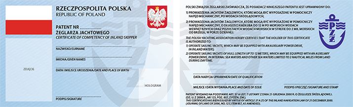
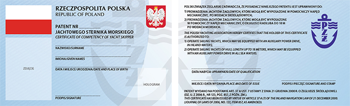
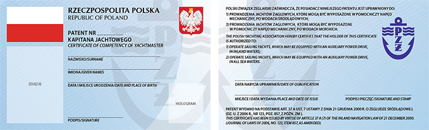

Żeglarstwo
Żeglarstwo
Rodzaje patentów żeglarskich
Żeglarz jachtwoy

Uprawnienia:
prowadzenie jachtów żaglowych bez lub z pomocniczym napędem mechanicznym po wodach śródlądowych, prowadzenie jachtów żaglowych bez lub z pomocniczym napędem mechanicznym o długości kadłuba do 12 m po morskich wodach wewnętrznych oraz pozostałych wodach morskich w strefie 2 Mm od brzegu, w porze dziennej.
Wymagania:
Egazamin teoretyczny
Jachtowy sternik morski

Uprawnienia:
prowadzenie jachtów żaglowych bez lub z pomocniczym napędem mechanicznym po wodach śródlądowych, prowadzenie jachtów żaglowych bez lub z pomocniczym napędem mechanicznym o długości kadłuba do 18 m po wodach morskich. Dodatkowo patent ten daje uprawnienia motorowodnego sternika morskiego.
Kapitan jachtowy
